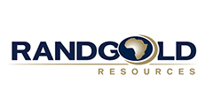
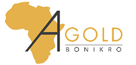
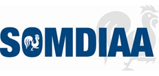
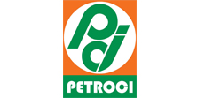
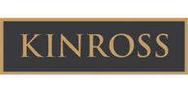

PME ivoirienne spécialisée en construction métallique, chaudronnerie, soudure industrielle, tuyauterie et électricité industrielle. Décrivez votre besoin à notre assistant pour lancer votre demande de devis.
La société PRESCOMS (Prestation Construction Métallique et Soudure) est une entreprise ivoirienne reconnue, spécialisée dans divers secteurs techniques de la construction et de l'industrie. Depuis sa création en 2014, elle s'est imposée comme un acteur clé dans les domaines de la construction métallique, de la chaudronnerie industrielle, de la soudure industrielle, de la tuyauterie, du revêtement en caoutchouc (Rubberline), de la maintenance de bandes et convoyeurs, ainsi que dans la prestation de personnel qualifié. Son siège est situé à Koumassi, dans la zone de Sogephia Recasement à Abidjan (Côte d'Ivoire).
Une PME spécialisée dans divers secteurs d'ingénierie.
Fabrication, assemblage et installation de structures métalliques d'industries, d'entrepôts, de ponts et d'infrastructures complexes.
Conception et fabrication d'équipements et de structures en métal sur mesure.
Travaux de soudure de haute précision dans des domaines variés.
Installation et maintenance de réseaux de fluides : gaz, eau, produits chimiques.
Montage et mise en service d'unités et de lignes industrielles.
Travaux de génie civil liés aux projets industriels et métalliques.
Protection des équipements industriels : convoyeurs, réservoirs, structures exposées.
Entretien et réparation des systèmes de convoyage industriel.
Mise à disposition de personnel qualifié : construction métallique, soudure, chaudronnerie et autres spécialités.
Une grande partie de la structure est fabriquée en usine, ce qui accélère le montage sur chantier et réduit la durée des travaux.
Les métaux, comme l'acier, offrent une résistance exceptionnelle aux contraintes mécaniques et aux intempéries, pour des décennies d'usage.
Décrivez ce dont vous avez besoin, l'assistant s'occupe du reste.
Ils nous font confiance.




